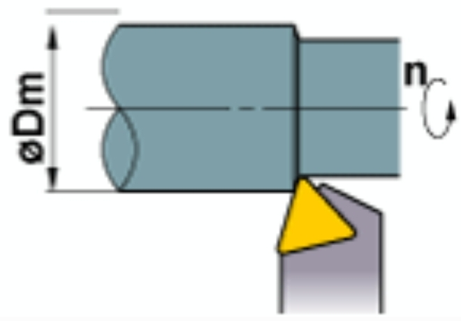
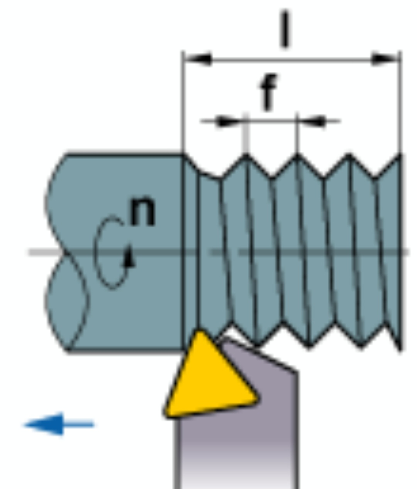

Turning Cutting Parameters Calculator
Rev: 003


\[ vc = \frac{\pi \cdot D \cdot n}{1000} \, (m/min) \]
\[ f = \frac{l}{n} \, (mm/rev) \]
vc : Cutting Speed (m/min)
D : Workpiece Diameter (mm)
n : Spindle Speed (min
-1
)
f : Feed Rate (mm/rev)
l : Length of Cut (mm/min)
Spindle Speed (n)
min
-1
Cutting Speed (vc)
Calculate D
mm
Calculate vc
m/min
Feed Rate (f)
Calculate l
mm/min
Calculate f
mm/rev
Calculate All
* π (Pi) = 3.14
* This calculator is for reference only. Actual results may vary based on cutting conditions.